{% set title = "IMPro - Статья блога" %}
{% set bodyClass = "" %}
{% set show_info = true %}

{% extends "_html/_base/_layouts/_default.html" %}

{% block content %}
<!-- SMALL-HERO BLOCK START -->

<section class="hero small-hero">


    <div class="hero__c container hero__c--subpage">
        <div class="hero__main hero__main--subpage">
            <ul class="breadcrumbs">
                <li><a href="index.html">Главная</a></li>
                <li><a href="blog.html">Блог</a></li>
                <li><span>Лидогенерация в&nbsp;2024 году: как агентства привлекают клиентов</span></li>
            </ul>

            <div class="hero__tags tags hero__tags--subpage">

            </div>
            <div class="hero__h1__wrap">
                <h1 class="hero__h1 animate-custom-7 wow">
                    Лидогенерация в&nbsp;2024 году: как агентства привлекают клиентов
                </h1>
            </div>

</section>

<!-- HERO BLOCK END -->

<!-- ARTICLE INFO START -->
<section class="nav-blog article-info">
    <div class="nav-blog__wrapper container">
        <button class="nav-blog__item nav-blog__item active article-info__type">
            Продвижение
        </button>
        <button class="nav-blog__item article-info__date">
            
            23 декабря 2024
        </button>
    </div>
</section>
<!-- ARTICLE INFO END -->

<!-- ARTICLE IMG START -->
<section class="big-img">
    
</section>
<!-- ARTICLE IMG END -->


<!-- ARTICLE TEXT START -->
<section class="article-text container">
    <article class="article-text__desc">
        <h6>Если раньше лидогенерация была набором стандартных инструментов, то&nbsp;в&nbsp;2024 году это комплексный
            процесс,
            включающий
            персонализированный подход, высокие технологии и&nbsp;глубокую аналитику.</h6>

        <div>
            <h2>Привлечение клиентов онлайн: новые горизонты</h2>

            <p>Для этого использовались:</p>

            <ol>
                <li>Ретаргетинг: напоминания о&nbsp;товарах и&nbsp;услугах через баннеры и&nbsp;электронную почту.</li>
                <li>Интерактивные форматы: тесты, квизы, мини-игры, бесплатные вебинары, которые вовлекают клиента
                    и&nbsp;создают доверие.</li>
                <li>Контент, который обучает: обучающие видео, статьи и&nbsp;подкасты, помогающие странам решить его
                    задачи
                    еще
                    до&nbsp;обращения</li>
            </ol>
        </div>
        <div>
            <h2>Лиды для B2B: стратегический подход</h2>

            <p>Работа с&nbsp;B2B-аудиторией требует более тонкого подхода. В&nbsp;этом сегменте важны точность,
                аналитика
                и&nbsp;профессиональное
                общение. Сегодняшние успешные стратегии включают в&nbsp;себя:</p>

            <ul>
                <li>Использование LinkedIn и&nbsp;профессиональных платформ: поиск снаружи среди руководителей
                    и&nbsp;топ-менеджеров.</li>
                <li>Холодные электронные рассылки: с&nbsp;качественным текстом и&nbsp;четкими предложениями, которые
                    вызывают
                    желание обсудить
                    сотрудничество.</li>
                <li>CRM-системы и&nbsp;аналитика: интеграция данных о&nbsp;клиентах и&nbsp;​​отслеживание
                    их&nbsp;поведения
                    помогает выстроить точечное
                    взаимодействие.</li>
            </ul>
        </div>
        <div>
            <h2>Стратегии лидогенерации 2024 года</h2>

            <ul>
                <li>Искусственный интеллект: анализ данных, чат-боты и прогнозирование поведения клиентов делают
                    лидогенерацию
                    быстрой
                    и изысканной. ИИ помогает определить, кто из опасных клиентов готов к сделке, а кто требует
                    дополнительных
                    усилий.</li>
                <li>Упрощение взаимодействия: соединение форм обратной связи, автоматизация ответов, мгновенное
                    взаимодействие
                    через
                    мессенджеры и электронную почту.</li>
                <li>Создание актуального контента: Кейсы, вебинары, отзывы клиентов. Лучшая реклама — реальные успешные
                    проекты.
                </li>
            </ul>

            <p>Лидогенерация в 2024 году — это искусство, подкрепленное технологиями. Это больше не просто воронка, это
                целостный
                процесс, который позволяет превратить обычное обращение в долгосрочные контракты.</p>
            <p>Агентство IMpro — эксперт в области лидогенерации. Мы знаем как настроить процесс, чтобы вы не просто
                привлекали
                клиентов, а выстраивали с ними надежные партнерские отношения. Доверьте свою лидогенерацию
                профессионалам
                в IMpro.</p>
        </div>
    </article>
    <div class="article-text__tags">
        <div class="article-text__info">
            <span>Теги:</span>
            <button class="nav-blog__item nav-blog__item active article-info__type">
                Продвижение
            </button>
        </div>
        <div class="article-text__networks">
            <span>Поделиться:</span>
            <div class="article-text__networks-icons">
                <a href="#" class="tg"></a>
                <a href="#" class="wa"></a>
                <a href="#" class="vk"></a>
                <a href="#" class="copy"></a>
            </div>
        </div>
    </div>
</section>
<!-- ARTICLE TEXT END -->

<!-- BLOG START -->
<section class="blog articles-slider">
    <div class="container blog__c">
        <div class="blog__title">
            Похожие статьи
        </div>
        <div class="blog__list">
            <div class="blog-card-wrapper">
                <a href="" class="blog-card">
                    <span class="blog-card-preview">
                        
                    </span>
                    <span class="blog-card-date">07.07.2025</span>
                    <span class="blog-card-title">
                        Почему сайт не продает:
                        7&nbsp;ключевых&nbsp;причин и их решение
                    </span>
                </a>
            </div>
            <div class="blog-card-wrapper">
                <a href="" class="blog-card">
                    <span class="blog-card-preview">
                        
                    </span>
                    <span class="blog-card-date">07.07.2025</span>
                    <span class="blog-card-title">
                        Почему сайт не продает:
                        7&nbsp;ключевых&nbsp;причин и их решение
                    </span>
                </a>
            </div>
            <div class="blog-card-wrapper">
                <a href="" class="blog-card">
                    <span class="blog-card-preview">
                        
                    </span>
                    <span class="blog-card-date">07.07.2025</span>
                    <span class="blog-card-title">
                        Почему сайт не продает:
                        7&nbsp;ключевых&nbsp;причин и их решение
                    </span>
                </a>
            </div>
            <div class="blog-card-wrapper">
                <a href="" class="blog-card">
                    <span class="blog-card-preview">
                        
                    </span>
                    <span class="blog-card-date">07.07.2025</span>
                    <span class="blog-card-title">
                        Почему сайт не продает:
                        7&nbsp;ключевых&nbsp;причин и их решение
                    </span>
                </a>
            </div>
        </div>
        <a href="blog.html" class="btn blog__btn">
            <span>
                Читать блог
            </span>
        </a>
    </div>
</section>
<!-- BLOCK END -->
{% endblock %}

{% block add_scripts %}

{% endblock %}